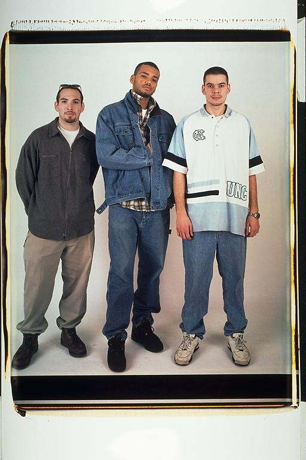

Aldo: I think this picture was taken on Isaac's birthday. His birthday is also the day before my birthday, so we usually celebrate it together. At this point we really weren't seeing much of each other, and since we were late in joining the email cult, we did not correspond that often. But I'm sure it was a fun occasion, as it usually always was when we got together to get our pictures taken.
Eugene: "I'm throwing up the Alpha sign under my jacket" -- Aldo is wearing my UNC shirt, and I eventually lost the watch he is wearing and let me borrow. Isaac first began wearing earth tones that year. I was throwing up the Alpha sign under my shirt. Although I wasn't yet in the fraternity I wanted this picture to be a testimony that I knew I would be in it one day. We joked about how Aldo looked so two dimensional in this picture.
Isaac: Eugene's doing his "secret fraternity hand-gesture" under his jacket (groan) while I'm deep into my "why wear anything but khaki?" phase. Unfortunately, Aldo couldn't make this picture, so we put up a life size cutout of him. I think it worked fine.
